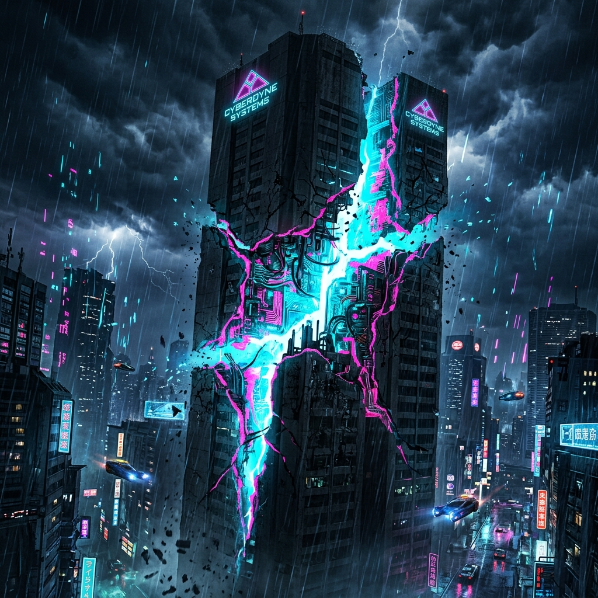
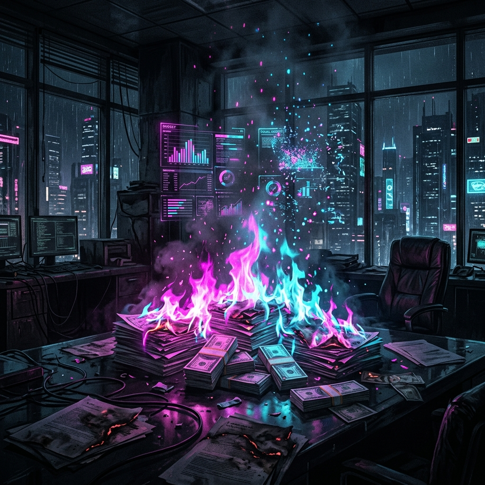
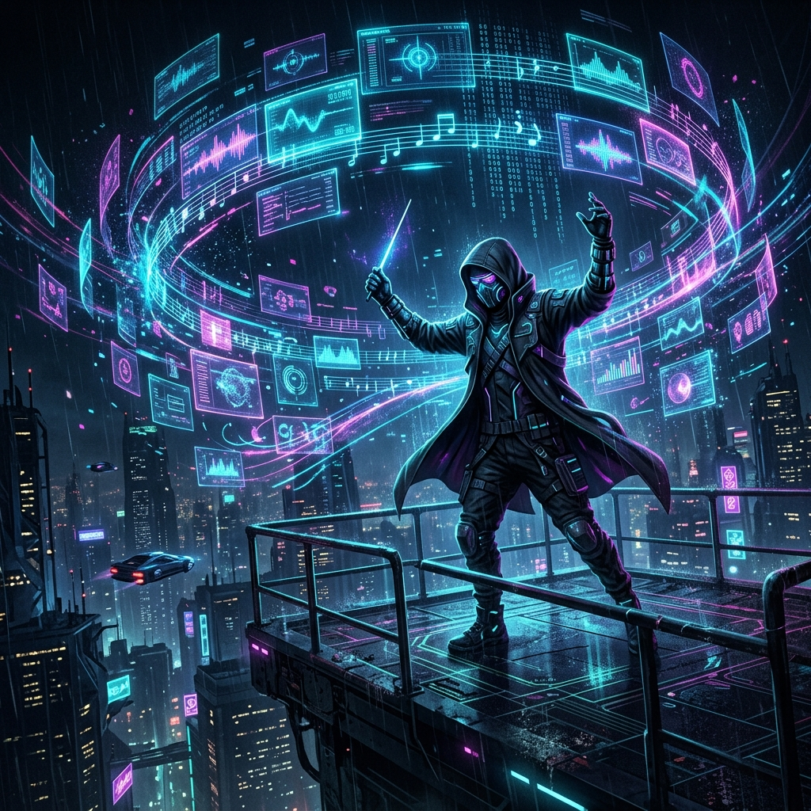
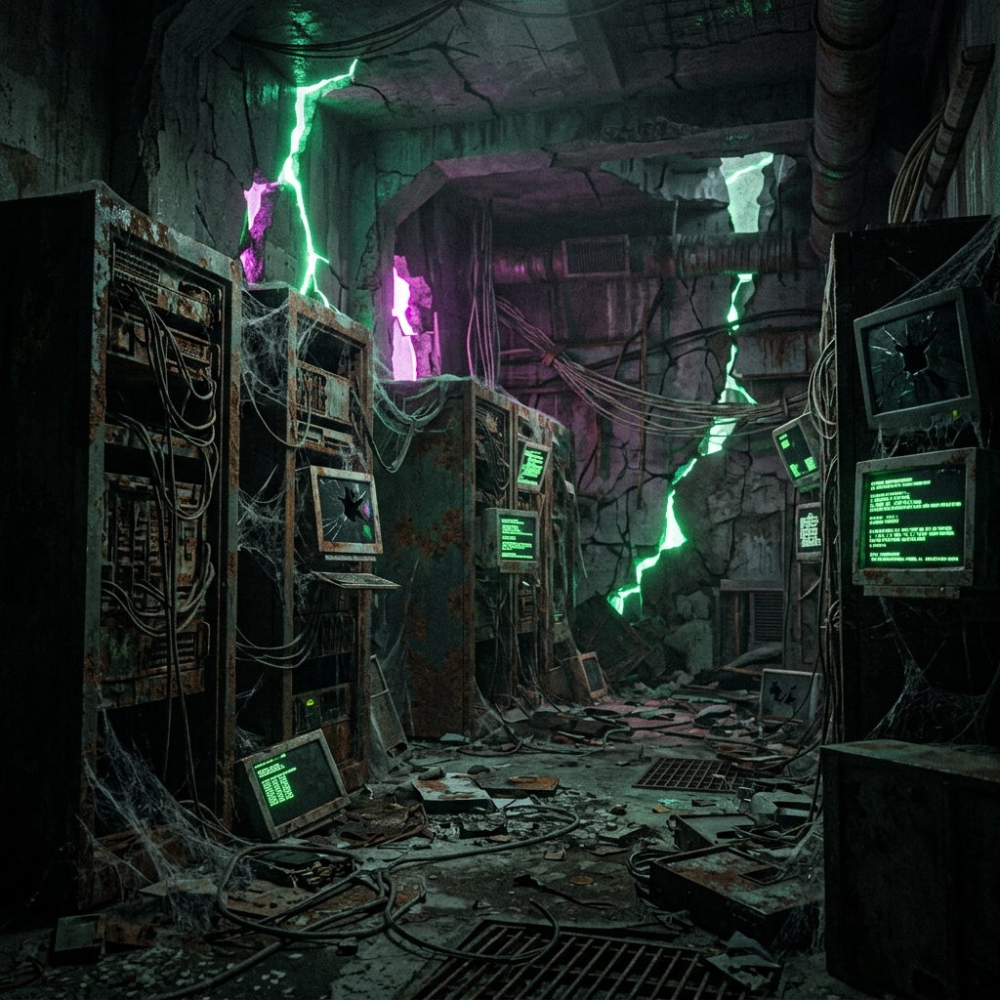
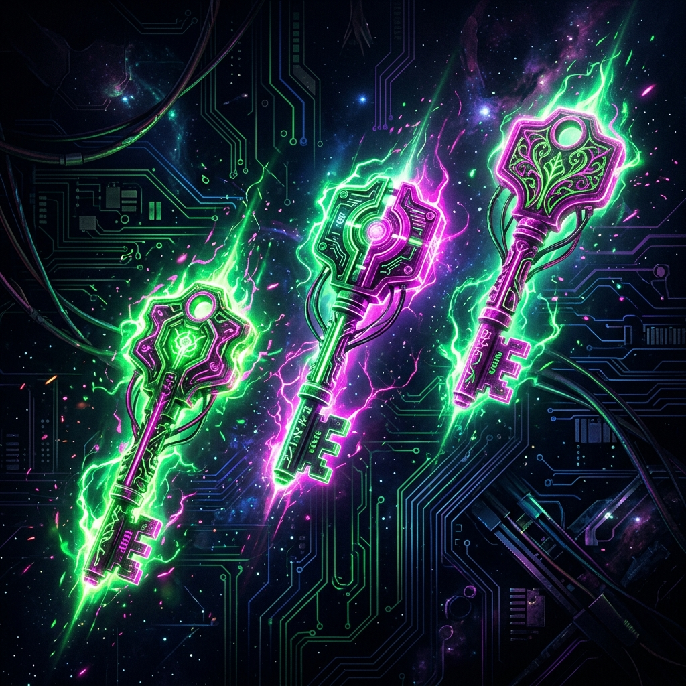
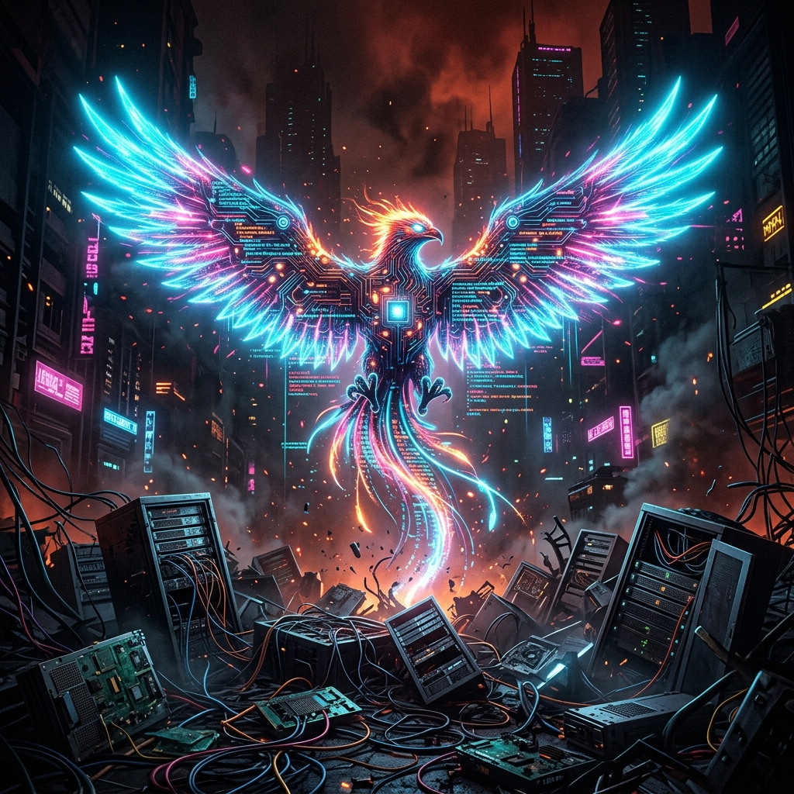
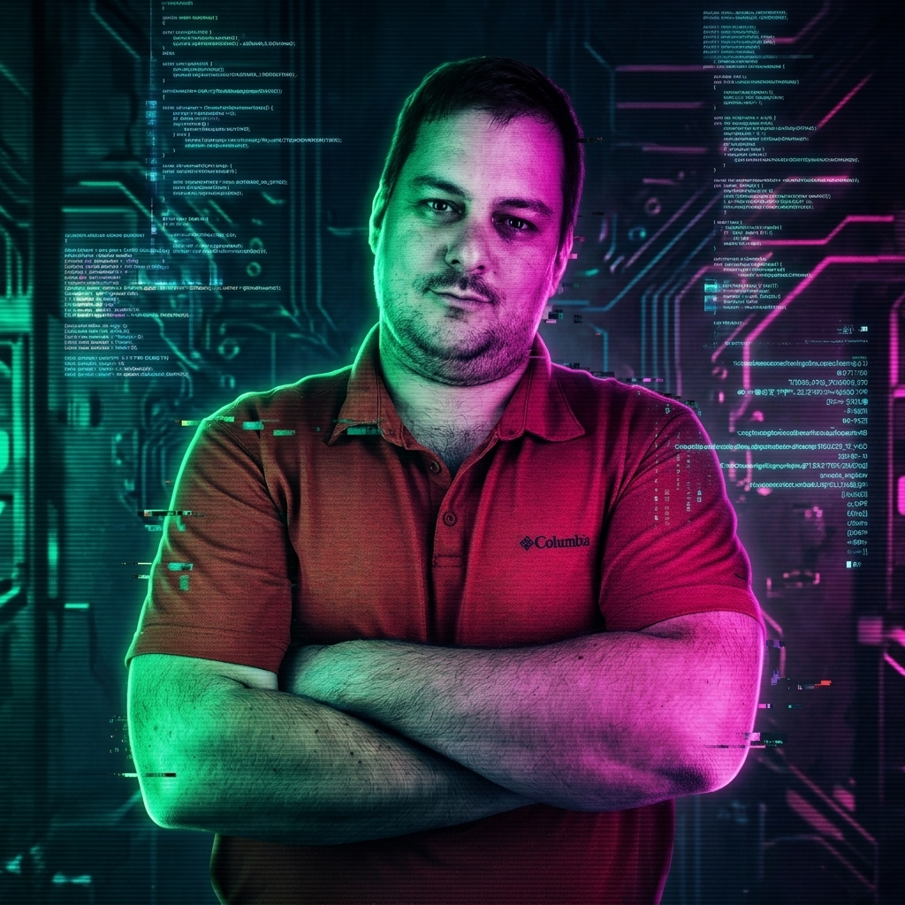

Вайбкодинг, AI‑агенты и живой кейс


Строю digital и e‑commerce системы федерального уровня там, где ресурсы ограничены, а планка — нет.
А что если всё это — необязательно?
Это ты — дирижёр, архитектор,
AI — твой оркестр.

«Сделай мне сайт»
«Добавь кнопку»
«Почему сломалось?!»
→ Мусор
Стратегия → Архитектура
Архитектура → Задачи
Задачи → Агенты
→ Продукт
Раньше → 6 месяцев, год, ∞
Идея → Согласование → Бриф → Тендер → Команда → Разработка → Тест → Согласование, согласование…
Сейчас → часы и дни
Идея — Система (правила, ограничения) — агенты в контексте — промпты — прототип — валидация — MVP
Легендарный fashion‑бренд.
Компактная команда. Оркестр AI‑агентов.
Несколько месяцев.

Классический ответ: «Наймите 20 разработчиков»
Наш ответ: «Нет.»
Всё — за пару месяцев



TG: @kadatsky
Роль: Руководитель интернет-магазина FINN FLARE
Спасибо за внимание 🚀